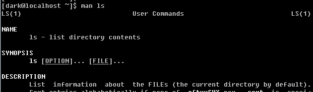

terminal
linux 一般提供了 6個操作終端 供用戶 操作 tty1 為 x window (如果沒安裝x window 一般tty1 也是字符終端) tty2~tty6 為字符終端 使用 [CTRL] + [ALT] + [F1~F6] 可在終端間切換 在字符終端 輸入 startx 一般可以在此終端ttyn下啟動 w window (如果有安裝的話 且沒有其他 w window已經被啟動)
基礎命令
//查看 目錄
ls -al ~
a 顯示隱藏文件
l 顯示文件詳細信息
//顯示日期時間
date
date +%Y/%m/%d // 2016/03/28
date +%H:%M // 13:23
//顯示月曆
cal
cal 2016 //显示2016年整个月历
cal 1 2016 //显示2016年 1月 月历
//顯示支持的 語系
locale
//自動補齊
[Tab]
//中斷當前 程式
[CTRL] + C
//結束 文字 輸入
[CTRL] + D
//翻頁
[SHIFT] + [PageUp]/[PageDown]
計算器
bc 是linux提供的一個 計算器軟體 絕大部分發行版都有自帶 + - * / ^ 指数 % //查看小数位数 scale //设置小数位数 不会四舍五入 直接舍去 scale=number //退出 bc quit
--help
linux 絕大部分 命令 都有一個 --help 參數 可以顯示 此命令的 詳細用戶 [dark@localhost ~]$ cal --help Usage: cal [options] [[[day] month] year] 選項： -1, --one show only current month (default) -3, --three show previous, current and next month -s, --sunday Sunday as first day of week -m, --monday Monday as first day of week -j, --julian output Julian dates -y, --year show whole current year -V, --version display version information and exit -h, --help display this help text and exit
man
man 既 manual(操作說明) 的簡寫 輸入 man 命令名 即可查詢 指定 命令的 操作說明 linux 的 /user/share/man 目錄下 存放了 程式os命令的操作說明文件 執行 man 命令名 或自動查找 說明文件 並顯示 修改 /etc/man_db.conf (亦可能是 man.conf/manpath.conf/man.config) 可以修改 man 的查找目錄  LS(1) 其中1 是 類型代號 1 用户在shel中可操作的命令或可执行文件 2 系统内核调用的函数与工具等 3 常用的函数 函数库 (大部分为c函数库) 4 设备文件说明 5 配置文件 或某些格式文件 6 游戏 7 惯例与协议等 8 系统管理员可用的命令 9 跟kernel有关 之後 會以多個 段的 形式 顯示 命令 相關說明 NAME //简短命令 数据名称说明 SYNOPSIS //简短的命令执行语法简介 DESCRIPTION //完整说明 OPTIONS //针对SYNOPSIS列举所有可用选项说明 COMMANDS //当此软件在执行时 可在此软件中执行的命令 FILES //此程序或数据所使用或参考或连接到的某些文件 SEE ALSO //相关的其他说明 EXAMPLE //范例 BUGS //是否有相关错误
doc
/usr/share/doc 目錄被用以 存放 詳細 說明文件 linux下的軟體 安裝時 一般會將 自己的 各種 FAQ README EXAMPLE 之類的東西 放到此目錄下的 軟體名-xxx目錄下 供 用戶 查看
nano
nano 一個簡單的 文本編輯器 //查看 說明 [CTRL] + G //退出 nano [CTRL] + X //存儲 檔案 [CTRL] + O //從其它 檔案 對其數據 [CTRL] + R //搜索字符串 [CTRL] + W //說明 目前 游標 所在行數 列數 [CTRL] + C //輸入 行號 [CTRL] + _ //打開/關閉 語法校正 [ALT] + Y //使用鼠標 滑動 來移動游標 [ALT] + M